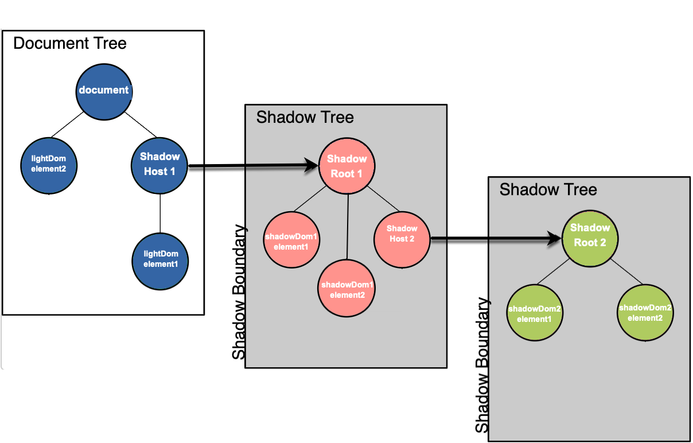

This is a simple Shadow DOM example which highlights that Heap can effectively capture ShadowDom events, as described in this Heap blog article.
There are 2 Shadow DOM nodes in the colored divs below: red being the 1st node, and green being the 2nd node (which is appended to the 1st).
Elements that are not Shadow DOM elements (i.e. Light DOM elements) are highlighted in blue. The image below visually describes the Shadow DOM elements in this example:
